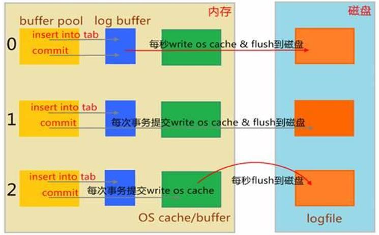
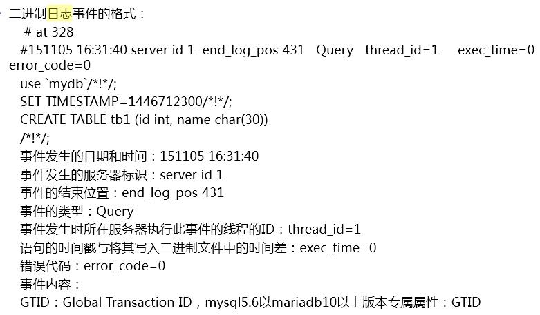

日志
事务日志 transaction log
错误日志 error log
通用日志 general log
慢查询日志 slow query log
二进制日志 binary log
中继日志 reley log
事务日志
事务日志默认为顺序地的追加进事务日志文件，ib_logfile0,ib_logfile1
查看事务日志变量
SHOW VARIABLES LIKE 'innodb_log'
innodb_log_file_size 默认为5M，每个日志文件大小
innodb_log_file_in_group 2，日志组成员
innodb_log_group_home_dir ./，事务日志文件路径
innodb_flush_log_at_trx_commit ，事务日志刷新到磁盘的定义，默认为1
innodb_flush_log_at_trx_commit
说明：设置为1，同时sync_binlog = 1表示最高级别的容错
innodb_use_global_flush_log_at_trx_commit的值确定是否可以使用SET语句 重置此变量
1默认情况下，日志缓冲区将写入日志文件，并在每次事务后执行刷新到磁盘。这是完全遵守ACID特性
0提交时没有任何操作; 而是每秒执行一次日志缓冲区写入和刷新。这样可以提供更好的性能，但服务器崩溃可以清除最后一秒的事务
2每次提交后都会写入日志缓冲区，但每秒都会进行一次刷新。性能比0略好一些，但操作系统或停电可能导致最后一秒的交易丢失
3模拟MariaDB 5.5组提交（每组提交3个同步），此项MariaDB 10.0支持
优化

错误日志
错误日志
mysqld启动和关闭过程中输出的事件信息
mysqld运行中产生的错误信息
event scheduler运行一个event时产生的日志信息
在主从复制架构中的从服务器上启动从服务器线程时产生的信息
错误日志相关配置
SHOW GLOBAL VARIABLES LIKE 'log_error'
错误文件路径
log_error=/PATH/TO/LOG_ERROR_FILE
是否记录警告信息至错误日志文件
log_warnings=1|0 默认值1
通用日志
通用日志：记录对数据库的通用操作，包括错误的SQL语句
文件：file，默认值
表：table
通用日志相关设置
SHOW GLOBAL VARIABLES LIKE 'general%';
SHOW GLOBAL VARIABLES LIKE 'log_out%';
相关设置
general_log=ON|OFF
general_log_file=HOSTNAME.log
log_output=TABLE|FILE|NONE
TABLE：将语句操作记录在mysql.general_log表里
FILE： 将语句操作记录在数据目录下
慢查询日志
记录执行查询时长超出指定时长的操作
show profiles //查看慢查询的所有编号
show profile for query 5 //查询指定慢查询编号的详细执行过程
SHOW GLBOAL VARIABLES LIKE 'show_query_log'
相关的设置：
slow_query_log=ON|OFF 开启或关闭慢查询
long_query_time=N 慢查询的阀值，单位秒
slow_query_log_file=HOSTNAME-slow.log 慢查询日志文件
log_show_filter=admin,filesort,filesort_on_disk,full_join,full_scan,query_cache,query_cache_miss,tmp_table,tmp_table_on_disk
上述查询类型且查询时长超过long_query_time，则记录日志
log_queries_not_using_indexes=ON 不使用索引或使用全索引扫描，不论是否达到慢查询阀值的语句是否记录日志，默认OFF，即不记录
log_slow_rate_limit = 1 多少次查询才记录，mariadb特有
log_slow_verbosity= Query_plan,explain 记录内容
二进制日志
二进制日志
记录导致数据改变或潜在导致数据改变的SQL语句
记录已提交的日志
不依赖于存储引擎类型
功能：通过“重放”日志文件中的事件来生成数据副本 注意：建议二进制日志和数据文件分开存放
中继日志：relay log
主从复制架构中，从服务器用于保存从主服务器的二进制日志中读取的事件
二进制日志记录三种格式
基于“语句”记录：statement，记录语句，默认模式
基于“行”记录：row，记录数据，日志量较大
混合模式：mixed, 让系统自行判定该基于哪种方式进行
查看二进制日志记录格式
SHOW VARIABLES LIKE 'binlog_format'
二进制日志文件的构成
有两类文件
日志文件：mysql|mariadb-bin.文件名后缀，二进制格式
如： mariadb-bin.000001
索引文件：mysql|mariadb-bin.index，文本格式
查看mariadb自行管理使用中的二进制日志文件列表，及大小
SHOW {BINARY | MASTER} LOGS
查看使用中的二进制日志文件
SHOW MASTER STATUS
查看二进制文件中的指定内容
SHOW BINLOG EVENTS [IN 'log_name'] [FROM pos] [LIMIT [offset,] [row_count]
show binlog events in ‘mysql-bin.000001' from 6516 limit 2,3
手动刷新二进制日志,重新生成
FLUSH logs
相关的配置：
sql_log_bin={on|off}，默认为ON
log_bin=/PATH/LOG_BIN_FILENAME，默认为off，只有在配置文件中写入该选项才能启用二进制日志
binlog_format={statement|row|mixed}
max_binlog_size=默认为1G，当日志文件到达其值时自动滚动
说明：文件达到上限时的大小未必为指定的精确值
sync_binlog={1|0}，二进制日志即时同步磁盘功能，默认为0，由操作系统负责同步日志到磁盘
expire_logs_days=N，二进制日志可以自动删除的天数。 默认为0，即不自动删除
mysqlbinlog 二进制日志的客户端命令工具
mysqlbinlog [option] LOG_BIN_FILE
[option]
-v，显示二进制日志文件命令的详细信息
--start-position，开始的位置
--stop-position，停止的位置
--start-datetime，开始的时间点，时间格式：YYYY-MM-DD hh:mm:ss
--stop-datetime，停止的时间点
示例：
mysqlbinlog /var/lib/mysql/bin.000003 -v
mysqlbinlog --start-position=6787 --stop-position=7527 /var/lib/mysql/bin.000003 -v
mysqlbinlog --start-datetime="2018-12-09 16:20:10" --stop-datetime="2018-12-09 16:30:00" bin.000009 -v

清除指定二进制日志
PURGE BINARY LOGS TO 'LOG_BIN_FILENAME';
示例：
PRUGE BINARY LOGS TO 'mysql-bin.000002' ;删除2之前的日志
PURGE BINARY LOGS BEFORE '2017-01-23';
PURGE BINARY LOGS BEFORE '2017-03-22 09:25:30';
删除所有的日志
RESET MASTER [TO #]，文件名从#开始记数，默认从1开始，一般是master主机第一次启动时执行，MariaDB10.1.6开始支持TO #